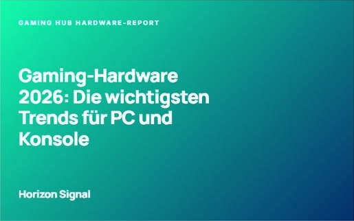
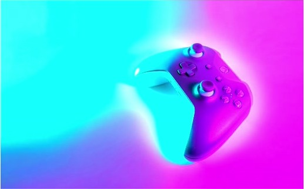
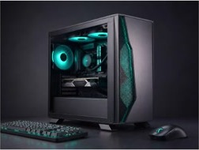
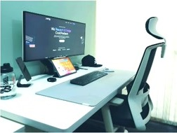
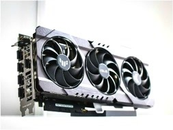
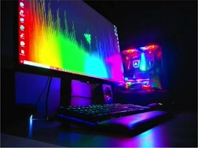
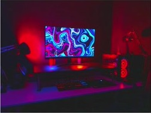
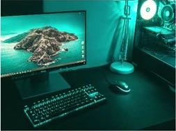

Bereit für dein
nächstes Gaming-
Upgrade.
Produkte entdecken →
BEKANNT AUS
HEISE ONLINE4PlayersGameStarPC GamesGAMEPROComputer BildGolem.deHEISE ONLINE
Aktuelle Gaming-News
Alle News ansehen →
Neue Konsolen, starke Releases: Das erwartet Gaming-Fans in diesem Jahr
Gaming für jeden Spielstil
01
Konsolen-News
Aktuelle Meldungen, Updates und Einblicke rund um PlayStation, Xbox und Nintendo – kompakt und auf den Punkt.
02
PC-Gaming
Neuigkeiten aus der PC-Gaming-Welt und fertig konfigurierte Gaming-PCs für unterschiedliche Ansprüche.
03
Gaming-Zubehör
Mäuse, Tastaturen und Headsets, die Komfort und Leistung ins Setup bringen – mit direkten Produktlinks.
04
Gaming-Hardware
Entdecke passende Komponenten und Gaming-Produkte mit klaren Infos für die nächste Aufrüstung.
“
„Gaming Hub begleitet uns mit fundierter Beratung und einem klaren Blick für die passende Hardware. Von leistungsstarken Gaming-PCs bis zu Maus, Tastatur und Headset finden wir hier verlässliche Empfehlungen, die unser Setup sinnvoll ergänzen.“— ALEX BERGER, GAMING-REDAKTION, GAMING HUB
So finden Sie Ihr Gaming-Setup
STEP 01
Bedarf klären
Wir ordnen Spiele, Budget und Anforderungen ein – als Grundlage für die passende Gaming-Ausstattung.
STEP 02
PC auswählen
Vergleichen Sie vorkonfigurierte Gaming-PCs nach Leistung und Einsatzbereich, ohne sich durch Datenblätter kämpfen zu müssen.
STEP 03
Zubehör ergänzen
Entdecken Sie passende Mäuse, Tastaturen und Headsets mit direkten Links zu den jeweiligen Produkten.
STEP 04
Informiert bleiben
Aktuelle News zu PC-Gaming und Konsolen halten Sie über Technik, Spiele und Trends auf dem Laufenden.
Unser Gaming-Team
Mara Hoffmann
REDAKTION & MITGRÜNDERINBerichtet über Konsolen, PC-Gaming und aktuelle Branchentrends.
Leon Weber
HARDWARE & MITGRÜNDERPrüft Gaming-PCs und ordnet neue Hardware verständlich ein.
Nora Schneider
LEITUNG PRODUKT & BETRIEBKuratiert passende Gaming-Mäuse, Tastaturen und Headsets.
Yusuf Kaya
LEITUNG GAMING-NEWSVerfolgt Neuigkeiten zu Spielen, Konsolen und PC-Technik.
Gaming-Hardware im Überblick

Gaming-PC NexusJetzt erhältlich

Gaming-PC CoreJetzt erhältlich

Gaming-PC ProBewährt

Gaming-PC NovaDemnächst

Gaming-PC EdgeBewährt

Gaming-PC PulseDemnächst